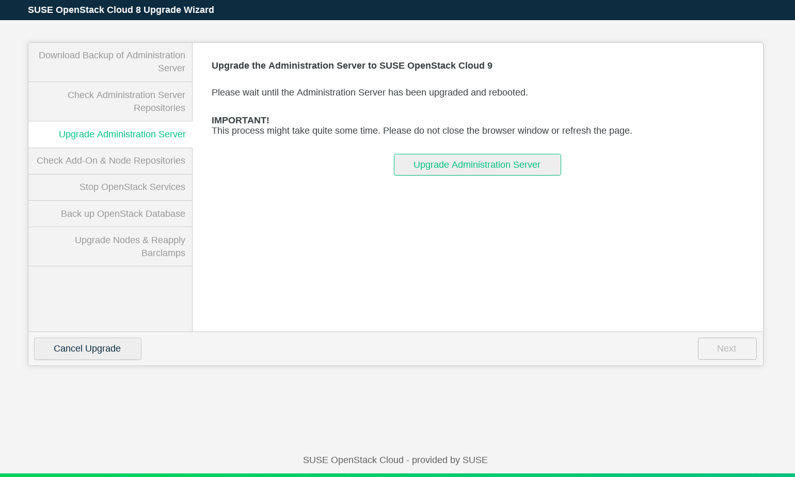
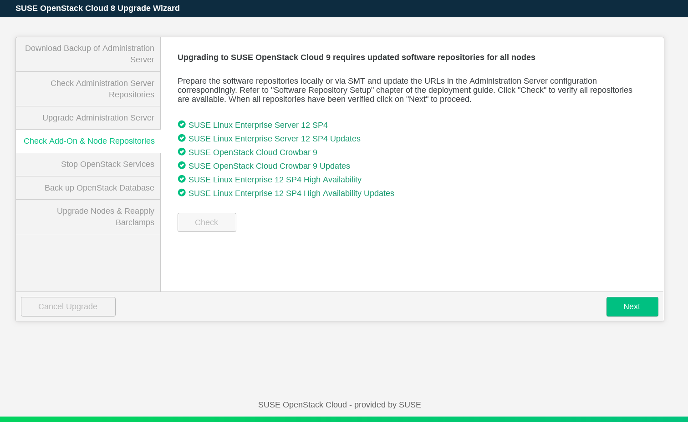

Upgrading from SUSE OpenStack Cloud Crowbar 8 to SUSE OpenStack Cloud Crowbar 9 can be done either via a Web interface or from the command line. SUSE OpenStack Cloud Crowbar supports a non-disruptive upgrade which provides a fully-functional SUSE OpenStack Cloud operation during most of the upgrade procedure, if your installation meets the requirements at Non-Disruptive Upgrade Requirements.
If the requirements for a non-disruptive upgrade are not met, the upgrade procedure will be done in normal mode. When live-migration is set up, instances will be migrated to another node before the respective Compute Node is updated to ensure continuous operation.
STONITH and Administration Server
Make sure that the STONITH mechanism in your cloud does not rely on the state of the Administration Server (for example, no SBD devices are located there, and IPMI is not using the network connection relying on the Administration Server). Otherwise, this may affect the clusters when the Administration Server is rebooted during the upgrade procedure.
When starting the upgrade process, several checks are performed to determine whether the SUSE OpenStack Cloud is in an upgradeable state and whether a non-disruptive update would be supported:
General Upgrade Requirements
All nodes need to have the latest SUSE OpenStack Cloud Crowbar 8 updates and the latest SLES 12 SP3 updates installed. If this is not the case, refer to the section called “Deploying Node Updates with the Updater Barclamp” for instructions on how to update.
All allocated nodes need to be turned on and have to be in state “ready”.
All barclamp proposals need to have been successfully deployed. If a proposal is in state “failed”, the upgrade procedure will refuse to start. Fix the issue, or remove the proposal, if necessary.
If the Pacemaker barclamp is deployed, all clusters need to be in a healthy state.
The upgrade will not start when Ceph is deployed via Crowbar. Only external Ceph is supported. Documentation for SUSE Enterprise Storage is available at https://documentation.suse.com/ses/5.5/.
The following repositories need to be available on a server that is accessible from the Administration Server. The HA repositories are only needed if you have an HA setup. It is recommended to use the same server that also hosts the respective repositories of the current version.
SUSE-OpenStack-Cloud-Crowbar-9-PoolSUSE-OpenStack-Cloud-Crowbar-9-UpdateSLES12-SP4-PoolSLES12-SP4-UpdateSLE-HA12-SP4-Pool(for HA setups only)SLE-HA12-SP4-Update(for HA setups only)Important
Do not add repositories to the SUSE OpenStack Cloud repository configuration. This needs to be done during the upgrade procedure.
Non-Disruptive Upgrade Requirements
All Control Nodes need to be set up highly available.
A non-disruptive upgrade is not supported if the cinder has been deployed with the
raw devicesorlocal fileback-end. In this case, you have to perform a regular upgrade, or change the cinder back-end for a non-disruptive upgrade.A non-disruptive upgrade is prevented if the
cinder-volumeservice is placed on Compute Node. For a non-disruptive upgrade,cinder-volumeshould either be HA-enabled or placed on non-compute nodes.A non-disruptive upgrade is prevented if
manila-shareservice is placed on a Compute Node. For more information, see the section called “Deploying manila”.Live-migration support needs to be configured and enabled for the Compute Nodes. The amount of free resources (CPU and RAM) on the Compute Nodes needs to be sufficient to evacuate the nodes one by one.
In case of a non-disruptive upgrade, glance must be configured as a shared storage if the value in the glance is set to
File.For a non-disruptive upgrade, only KVM-based Compute Nodes with the
nova-compute-kvmrole are allowed in SUSE OpenStack Cloud Crowbar 8.Non-disruptive upgrade is limited to the following cluster configurations:
Single cluster that has all supported controller roles on it
Two clusters where one only has
neutron-networkand the other one has the rest of the controller roles.Two clusters where one only has
neutron-serverplusneutron-networkand the other one has the rest of the controller roles.Two clusters, where one cluster runs the database and RabbitMQ
Three clusters, where one cluster runs database and RabbitMQ, another cluster has the controller roles, and the third cluster has the
neutron-networkrole.
If your cluster configuration is not supported by the non-disruptive upgrade procedure, you can still perform a normal upgrade.
In SUSE OpenStack Cloud 9, certain configurations and barclamp combinations are no longer supported. See the SUSE OpenStack Cloud 9 release notes for details. The upgrade prechecks fail if they detect an unsupported configuration. Below is a list configurations that cause failure and possible solutions.
Unsupported Configurations
- aodh deployed
The aodh barclamp has been removed in SUSE OpenStack Cloud 9. Deactivate and delete the aodh proposal before continuing the upgrade.
- ceilometer deployed without monasca
As of SUSE OpenStack Cloud 9, ceilometer has been reduced to the ceilometer agent, with monasca being used as a storage back-end. Consequently, a standalone ceilometer without monasca present will fail the upgrade prechecks. There are two possible solutions.
Deactivate and delete the ceilometer proposal before the upgrade, and re-enable it after the upgrade.
Deploy the monasca barclamp before the upgrade.
Existing ceilometer Data
Existing ceilometer data is not migrated to new monasca storage. It stays in the MariaDB ceilometer database, and it can be accessed directly, if needed. The data is also included in the OpenStack database backup created by upgrade process.
- nova: Xen Compute Nodes present
As of SUSE OpenStack Cloud 9, the Xen hypervisor is no longer supported. On any cloud, where Xen based compute nodes are still present, the following procedure must be followed before it can be upgraded to SUSE OpenStack Cloud 9:
Run nova service-disable for all nova Compute Nodes running the Xen hypervisor. In the Crowbar context, these are the Compute Nodes with the
nova-compute-xenrole in the nova barclamp. This prevents any new VMs from being launched on these Compute Nodes. It is safe to leave the Compute Nodes in question in this state for the entire duration of the next step.Recreate all nova instances still running on the Xen-based Compute Nodes on non-Xen Compute Nodes or shut them down completely.
With no other instances on the Xen-based Compute Nodes, remove the nova barclamp's
nova-compute-xenrole from these nodes and re-apply the nova barclamp. You may optionally assign a differentnova-computerole, such asnova-compute-kvm, to configure them as Compute Nodes for one of the remaining hypervisors.
- trove deployed
The trove barclamp has been removed in SUSE OpenStack Cloud 9. Deactivate and delete the trove proposal before continuing the upgrade.
The Web interface features a wizard that guides you through the upgrade procedure.
Canceling the Upgrade
You can cancel the upgrade process by clicking . The upgrade operation can only be canceled before the Administration Server upgrade is started. When the upgrade has been canceled, the nodes return to the ready state. However, any user modifications must be undone manually. This includes reverting repository configuration.
To start the upgrade procedure, open the Crowbar Web interface on the Administration Server and choose +. Alternatively, point the browser directly to the upgrade wizard on the Administration Server, for example
http://192.168.124.10/upgrade/.On the first screen of the Web interface you will run preliminary checks, get information about the upgrade mode and start the upgrade process.

Perform the preliminary checks to determine whether the upgrade requirements are met by clicking in
Preliminary Checks.The Web interface displays the progress of the checks. You will see green, yellow or red indicator next to each check. Yellow means the upgrade can only be performed in the normal mode. Red indicates an error, which means that you need to fix the problem and run the again.
When all checks in the previous step have passed,
Upgrade Modeshows the result of the upgrade analysis. It will indicate whether the upgrade procedure will continue in non-disruptive or in normal mode.To start the upgrade process, click .
While the upgrade of the Administration Server is prepared, the upgrade wizard prompts you to . When the backup is done, move it to a safe place. If something goes wrong during the upgrade procedure of the Administration Server, you can restore the original state from this backup using the crowbarctl backup restore
NAMEcommand.Check that the repositories required for upgrading the Administration Server are available and updated. To do this, click the button. If the checks fail, add the software repositories as described in Chapter 5, Software Repository Setup. Run the checks again, and click .

Click to upgrade and reboot the admin node. Note that this operation may take a while. When the Administration Server has been updated, click .
Check that the repositories required for upgrading all nodes are available and updated. To do this click the button. If the check fails, add the software repositories as described in Chapter 5, Software Repository Setup. Run the checks again, and click .
Next, you need to stop OpenStack services. This makes the OpenStack API unavailable until the upgrade of control plane is completed. When you are ready, click . Wait until the services are stopped and click .
Before upgrading the nodes, the wizard prompts you to . The MariaDB database backup will be stored on the Administration Server. It can be used to restore the database in case something goes wrong during the upgrade. To back up the database, click . When the backup operation is finished, click .
If you prefer to upgrade the controller nodes and postpone upgrading Compute Nodes, disable the option. In this case, you can use the button to switch to the Crowbar Web interface to check the current configuration and make changes, as long as they do not affect the Compute Nodes. If you choose to postpone upgrading Compute Nodes, all OpenStack services remain up and running.

When the upgrade is completed, press to return to the Dashboard.

Dealing with Errors
If an error occurs during the upgrade process, the wizard displays a message with a description of the error and a possible solution. After fixing the error, re-run the step where the error occurred.
The upgrade procedure on the command line is performed by using the program
crowbarctl. For general help, run crowbarctl
help. To get help on a certain subcommand, run
crowbarctl COMMAND help.
To review the process of the upgrade procedure, you may call
crowbarctl upgrade status at any time. Steps may have
three states: pending, running, and
passed.
To start the upgrade procedure from the command line, log in to the Administration Server as
root.Perform the preliminary checks to determine whether the upgrade requirements are met:
root #crowbarctl upgrade prechecksThe command's result is shown in a table. Make sure the column does not contain any entries. If there are errors, fix them and restart the precheck command afterwards. You cannot proceed until the mandatory checks have passed.
root #crowbarctl upgrade prechecks +-------------------------------+--------+----------+--------+------+ | Check ID | Passed | Required | Errors | Help | +-------------------------------+--------+----------+--------+------+ | network_checks | true | true | | | | cloud_healthy | true | true | | | | maintenance_updates_installed | true | true | | | | compute_status | true | false | | | | ha_configured | true | false | | | | clusters_healthy | true | true | | | +-------------------------------+--------+----------+--------+------+Depending on the outcome of the checks, it is automatically decided whether the upgrade procedure will continue in non-disruptive or in normal mode. For the non-disruptive mode, all the checks must pass, including those that are not marked in the table as required.
Forcing Normal Mode Upgrade
The non-disruptive update will take longer than an upgrade in normal mode, because it performs certain tasks sequentially which are done in parallel during the normal upgrade. Live-migrating guests to other Compute Nodes during the non-disruptive upgrade takes additional time.
Therefore, if a non-disruptive upgrade is not a requirement for you, you may want to switch to the normal upgrade mode, even if your setup supports the non-disruptive method. To force the normal upgrade mode, run:
root #crowbarctl upgrade mode normalTo query the current upgrade mode run:
root #crowbarctl upgrade modeTo switch back to the non-disruptive mode run:
root #crowbarctl upgrade mode non_disruptiveIt is possible to call this command at any time during the upgrade process until the
servicesstep is started. After that point the upgrade mode can no longer be changed.Prepare the nodes by transitioning them into the “upgrade” state and stopping the chef daemon:
root #crowbarctl upgrade prepareDepending of the size of your SUSE OpenStack Cloud deployment, this step may take some time. Use the command crowbarctl upgrade status to monitor the status of the process named
steps.prepare.status. It needs to be in statepassedbefore you proceed:root #crowbarctl upgrade status +--------------------------------+----------------+ | Status | Value | +--------------------------------+----------------+ | current_step | backup_crowbar | | current_substep | | | current_substep_status | | | current_nodes | | | current_node_action | | | remaining_nodes | | | upgraded_nodes | | | crowbar_backup | | | openstack_backup | | | suggested_upgrade_mode | non_disruptive | | selected_upgrade_mode | | | compute_nodes_postponed | false | | steps.prechecks.status | passed | | steps.prepare.status | passed | | steps.backup_crowbar.status | pending | | steps.repocheck_crowbar.status | pending | | steps.admin.status | pending | | steps.repocheck_nodes.status | pending | | steps.services.status | pending | | steps.backup_openstack.status | pending | | steps.nodes.status | pending | +--------------------------------+----------------+Create a backup of the existing Administration Server installation. In case something goes wrong during the upgrade procedure of the Administration Server you can restore the original state from this backup with the command crowbarctl backup restore
NAMEroot #crowbarctl upgrade backup crowbarTo list all existing backups including the one you have just created, run the following command:
root #crowbarctl backup list +----------------------------+--------------------------+--------+---------+ | Name | Created | Size | Version | +----------------------------+--------------------------+--------+---------+ | crowbar_upgrade_1534864741 | 2018-08-21T15:19:03.138Z | 219 KB | 4.0 | +----------------------------+--------------------------+--------+---------+This step prepares the upgrade of the Administration Server by checking the availability of the update and pool repositories for SUSE OpenStack Cloud Crowbar 9 and SUSE Linux Enterprise Server 12 SP4. Run the following command:
root #crowbarctl upgrade repocheck crowbar +----------------------------------------+------------------+-----------+ | Repository | Status | Type | +----------------------------------------+------------------+-----------+ | SLES12-SP4-Pool | x86_64 (missing) | os | | SLES12-SP4-Updates | x86_64 (missing) | os | | SUSE-OpenStack-Cloud-Crowbar-9-Pool | available | openstack | | SUSE-OpenStack-Cloud-Crowbar-9-Updates | available | openstack | +----------------------------------------+------------------+-----------+Two of the required repositories are reported as missing, because they have not yet been added to the Crowbar configuration. To add them to the Administration Server proceed as follows.
Note that this step is for setting up the repositories for the Administration Server, not for the nodes in SUSE OpenStack Cloud (this will be done in a subsequent step).
Start yast repositories and proceed with . Replace the repositories
SLES12-SP3-PoolandSLES12-SP3-Updateswith the respective SP4 repositories.If you prefer to use zypper over YaST, you may alternatively make the change using zypper mr.
Next, replace the
SUSE-OpenStack-Cloud-Crowbar-8update and pool repositories with the respective SUSE OpenStack Cloud Crowbar 9 versions.Check for other (custom) repositories. All SLES SP3 repositories need to be replaced with the respective SLES SP4 version. In case no SP3 version exists, disable the repository—the respective packages from that repository will be deleted during the upgrade.
Administration Server with external SMT
If the Administration Server is configured with external SMT, the system repositories configuration is managed by the system utilities. In this case, skip the above substeps and run the zypper migration --download-only command.
Once the repository configuration on the Administration Server has been updated, run the command to check the repositories again. If the configuration is correct, the result should look like the following:
root #crowbarctl upgrade repocheck crowbar +----------------------------------------+-----------+-----------+ | Repository | Status | Type | +----------------------------------------+-----------+-----------+ | SLES12-SP4-Pool | available | os | | SLES12-SP4-Updates | available | os | | SUSE-OpenStack-Cloud-Crowbar-9-Pool | available | openstack | | SUSE-OpenStack-Cloud-Crowbar-9-Updates | available | openstack | +----------------------------------------+-----------+-----------+Now that the repositories are available, the Administration Server itself will be upgraded. The update will run in the background using zypper dup. Once all packages have been upgraded, the Administration Server will be rebooted and you will be logged out. To start the upgrade run:
root #crowbarctl upgrade adminAfter the Administration Server has been successfully updated, the Control Nodes and Compute Nodes will be upgraded. At first the availability of the repositories used to provide packages for the SUSE OpenStack Cloud nodes is tested.
Correct Metadata in the PTF Repository
When adding new repositories to the nodes, make sure that the new PTF repository also contains correct metadata (even if it is empty). To do this, run the createrepo-cloud-ptf command.
Note that the configuration for these repositories differs from the one for the Administration Server that was already done in a previous step. In this step the repository locations are made available to Crowbar rather than to libzypp on the Administration Server. To check the repository configuration run the following command:
root #crowbarctl upgrade repocheck nodes +----------------------------------------+-------------------------------------+-----------+ | Repository | Status | Type | +----------------------------------------+-------------------------------------+-----------+ | SLE12-SP4-HA-Pool | missing (x86_64), inactive (x86_64) | ha | | SLE12-SP4-HA-Updates | missing (x86_64), inactive (x86_64) | ha | | SLE12-SP4-HA-Updates-test | missing (x86_64), inactive (x86_64) | ha | | SLES12-SP4-Pool | missing (x86_64), inactive (x86_64) | os | | SLES12-SP4-Updates | missing (x86_64), inactive (x86_64) | os | | SLES12-SP4-Updates-test | missing (x86_64), inactive (x86_64) | os | | SUSE-OpenStack-Cloud-Crowbar-9-Pool | missing (x86_64), inactive (x86_64) | openstack | | SUSE-OpenStack-Cloud-Crowbar-9-Updates | missing (x86_64), inactive (x86_64) | openstack | +----------------------------------------+-------------------------------------+-----------+To update the locations for the listed repositories, start yast crowbar and proceed as described in the section called “”.
Once the repository configuration for Crowbar has been updated, run the command to check the repositories again to determine, whether the current configuration is correct.
root #crowbarctl upgrade repocheck nodes +----------------------------------------+-----------+-----------+ | Repository | Status | Type | +----------------------------------------+-----------+-----------+ | SLE12-SP4-HA-Pool | available | ha | | SLE12-SP4-HA-Updates | available | ha | | SLES12-SP4-Pool | available | os | | SLES12-SP4-Updates | available | os | | SUSE-OpenStack-Cloud-Crowbar-9-Pool | available | openstack | | SUSE-OpenStack-Cloud-Crowbar-9-Updates | available | openstack | +----------------------------------------+-----------+-----------+Shut Down Running instances in Normal Mode
If the upgrade is done in the normal mode, you need to shut down or suspend all running instances before performing the next step.
Product Media Repository Copies
To PXE boot new nodes, an additional SUSE Linux Enterprise Server 12 SP4 repository—a copy of the installation system— is required. Although not required during the upgrade procedure, it is recommended to set up this directory now. Refer to the section called “Copying the Product Media Repositories” for details. If you had also copied the SUSE OpenStack Cloud Crowbar 8 installation media (optional), you may also want to provide the SUSE OpenStack Cloud Crowbar 9 the same way.
Once the upgrade procedure has been successfully finished, you may delete the previous copies of the installation media in
/srv/tftpboot/suse-12.4/x86_64/installand/srv/tftpboot/suse-12.4/x86_64/repos/Cloud.To ensure the status of the nodes does not change during the upgrade process, the majority of the OpenStack services will be stopped on the nodes. As a result, the OpenStack API will no longer be accessible. In case of the non-disruptive mode, the instances will continue to run and stay accessible. Run the following command:
root #crowbarctl upgrade servicesThis step takes a while to finish. Monitor the process by running crowbarctl upgrade status. Do not proceed before
steps.services.statusis set topassed.The last step before upgrading the nodes is to make a backup of the OpenStack database. The database dump will be stored on the Administration Server and can be used to restore the database in case something goes wrong during the upgrade.
root #crowbarctl upgrade backup openstackTo find the location of the database dump, run the crowbarctl upgrade status.
The final step of the upgrade procedure is upgrading the nodes. To start the process, enter:
root #crowbarctl upgrade nodes allThe upgrade process runs in the background and can be queried with crowbarctl upgrade status. Depending on the size of your SUSE OpenStack Cloud it may take several hours, especially when performing a non-disruptive update. In that case, the Compute Nodes are updated one-by-one after instances have been live-migrated to other nodes.
Instead of upgrading all nodes you may also upgrade the Control Nodes first and individual Compute Nodes afterwards. Refer to crowbarctl upgrade nodes --help for details. If you choose this approach, you can use the crowbarctl upgrade status command to monitor the upgrade process. The output of this command contains the following entries:
- current_node_action
The current action applied to the node.
- current_substep
Shows the current substep of the node upgrade step. For example, for the crowbarctl upgrade nodes controllers, the
current_substepentry displays thecontroller_nodesstatus when upgrading controllers.
After the controllers have been upgraded, the
steps.nodes.statusentry in the output displays therunningstatus. Check then the status of thecurrent_substep_statusentry. If it displaysfinished, you can move to the next step of upgrading the Compute Nodes.Postponing the Upgrade
It is possible to stop the upgrade of compute nodes and postpone their upgrade with the command:
root #crowbarctl upgrade nodes postponeAfter the upgrade of compute nodes is postponed, you can go to Crowbar Web interface, check the configuration. You can also apply some changes, provided they do not affect the Compute Nodes. During the postponed upgrade, all OpenStack services should be up and running.
To resume the upgrade, issue the command:
root #crowbarctl upgrade nodes resumeFinish the upgrade with either crowbarctl upgrade nodes all or upgrade nodes one node by one with crowbarctl upgrade nodes
NODE_NAME.When upgrading individual Compute Nodes using the crowbarctl upgrade nodes
NODE_NAMEcommand, thecurrent_substep_statusentry changes tonode_finishedwhen the upgrade of a single node is done. After all nodes have been upgraded, thecurrent_substep_statusentry displaysfinished.
Dealing with Errors
If an error occurs during the upgrade process, the output of the crowbarctl upgrade status provides a detailed description of the failure. In most cases, both the output and the error message offer enough information for fixing the issue. When the problem has been solved, run the previously-issued upgrade command to resume the upgrade process.
It is possible to select more Compute Nodes for selective upgrade instead of just one. Upgrading multiple nodes simultaneously significantly reduces the time required for the upgrade.
To upgrade multiple nodes simultaneously, use the following command:
root #crowbarctl upgrade nodesNODE_NAME_1,NODE_NAME_2,NODE_NAME_3
Node names can be separated by comma, semicolon, or space. When using space as separator, put the part containing node names in quotes.
Use the following command to find the names of the nodes that haven't been upgraded:
root # crowbarctl upgrade status nodesSince the simultaneous upgrade is intended to be non-disruptive, all Compute Nodes targeted for a simultaneous upgrade must be cleared of any running instances.
Note
You can check what instances are running on a specific node using the following command:
tux >nova list --all-tenants --hostNODE_NAME
This means that it is not possible to pick an arbitrary number of Compute Nodes for the simultaneous upgrade operation: you have to make sure that it is possible to live-migrate every instance away from the batch of nodes that are supposed to be upgraded in parallel. In case of high load on all Compute Nodes, it might not be possible to upgrade more than one node at a time. Therefore, it is recommended to perform the following steps for each node targeted for the simultaneous upgrade prior to running the crowbarctl upgrade nodes command.
Disable the Compute Node so it's not used as a target during live-evacuation of any other node:
tux >openstack compute service set --disable"NODE_NAME"nova-computeEvacuate all running instances from the node:
tux >nova host-evacuate-live"NODE_NAME"
After completing these steps, you can perform a simultaneous upgrade of the selected nodes.
- 1. Upgrade of the admin server has failed.
- 2. An upgrade step repeatedly fails due to timeout.
- 3. Node upgrade has failed during live migration.
- 4. Node has failed during OS upgrade.
- 5. Node does not come up after reboot.
- 6. N number of nodes were provided to compute upgrade using crowbarctl upgrade nodes node_1,node_2,...,node_N, but less then N were actually upgraded.
- 7. Node has failed at the initial chef client run stage.
- 8. I need to change OpenStack configuration during the upgrade but I cannot access Crowbar.
- 9. Failure occurred when evacuating routers.
- 10. Some non-controller nodes were upgraded after performing crowbarctl upgrade nodes controllers.
1. | Upgrade of the admin server has failed. |
Check for empty, broken, and not signed repositories in the Administration Server
upgrade log file | |
2. | An upgrade step repeatedly fails due to timeout. |
Timeouts for most upgrade operations can be adjusted in the
:prepare_repositories: 120
:pre_upgrade: 300
:upgrade_os: 1500
:post_upgrade: 600
:shutdown_services: 600
:shutdown_remaining_services: 600
:evacuate_host: 300
:chef_upgraded: 1200
:router_migration: 600
:lbaas_evacuation: 600
:set_network_agents_state: 300
:delete_pacemaker_resources: 600
:delete_cinder_services: 300
:delete_nova_services: 300
:wait_until_compute_started: 60
:reload_nova_services: 120
:online_migrations: 1800
The following entries may require higher values (all values are specified in seconds):
| |
3. | Node upgrade has failed during live migration. |
The problem may occur when it is not possible to live migrate certain
VMs anywhere. It may be necessary to shut down or suspend other VMs to
make room for migration. Note that the Bash shell script that starts
the live migration for the Compute Node is executed from the
Control Node. An error message generated by the crowbarctl
upgrade status command contains the exact names of both
nodes. Check the
It is possible that live-migration of a certain VM takes too long. This
can happen if instances are very large or network connection between
compute hosts is slow or overloaded. If this case, try to raise the
global timeout in
We recommend to perform the live migration manually first. After it is completed successfully, call the crowbarctl upgrade command again. The following commands can be helpful for analyzing issues with live migrations:
nova server-migration-list
nova server-migration-show
nova instance-action-list
nova instance-action
Note that these commands require OpenStack administrator privileges. The following log files may contain useful information:
It can happen that active instances and instances with heavy
loads cannot be live migrated in a reasonable time. In that case, you
can abort a running live-migration operation using the nova
live-migration-abort
Alternatively, it is possible to force the completion of
the live migration by using the nova
live-migration-force-complete
| |
4. | Node has failed during OS upgrade. |
Possible reasons include an incorrect repository setup or package
conflicts. Check the | |
5. | Node does not come up after reboot. |
In some cases, a node can take too long to reboot causing a timeout. We recommend to check the node manually, make sure it is online, and repeat the step. | |
6. | N number of nodes were provided to compute upgrade using crowbarctl upgrade nodes node_1,node_2,...,node_N, but less then N were actually upgraded. |
If the live migration cannot be performed for certain nodes due to a timeout, Crowbar upgrades only the nodes that it was able to live-evacuate in the specified time. Because some nodes have been upgraded, it is possible that more resources will be available for live-migration when you try to run this step again. See also Q: 3. | |
7. | Node has failed at the initial chef client run stage. |
An unsupported entry in the configuration file may prevent a service
from starting. This causes the node to fail at the initial
chef client run stage. Checking the
| |
8. | I need to change OpenStack configuration during the upgrade but I cannot access Crowbar. |
Crowbar Web interface is accessible only when an upgrade is completed or when it is postponed. Postponing the upgrade can be done only after upgrading all Control Nodes using the crowbarctl upgrade nodes postpone command. You can then access Crowbar and save your modifications. Before you can continue with the upgrade of rest of the nodes, resume the upgrade using the crowbarctl upgrade nodes resume command. | |
9. | Failure occurred when evacuating routers. |
Check the
openstack router show Resume the upgrade by running the failed upgrade step again to continue with the router migration. | |
10. | Some non-controller nodes were upgraded after performing crowbarctl upgrade nodes controllers. |
In the current upgrade implementation, OpenStack nodes are divided into Compute Nodes and other nodes. The crowbarctl upgrade nodes controllers command starts the upgrade of all the nodes that do not host compute services. This includes the controllers. |